Pizzería Tómbola · Burgos
Donde la pizza tiene un sabor redondo.
Pizza romana de 33 cm, fina y crujiente, con una masa que fermenta al menos 48 horas. Por eso es ligera: llegas a la última porción con ganas de otra.
- 48 hfermentación
- 33 cmcada pizza
- +30pizzas
- Glovoa domicilio
01 — Nuestro obrador
48 horas antes de tu primer bocado.
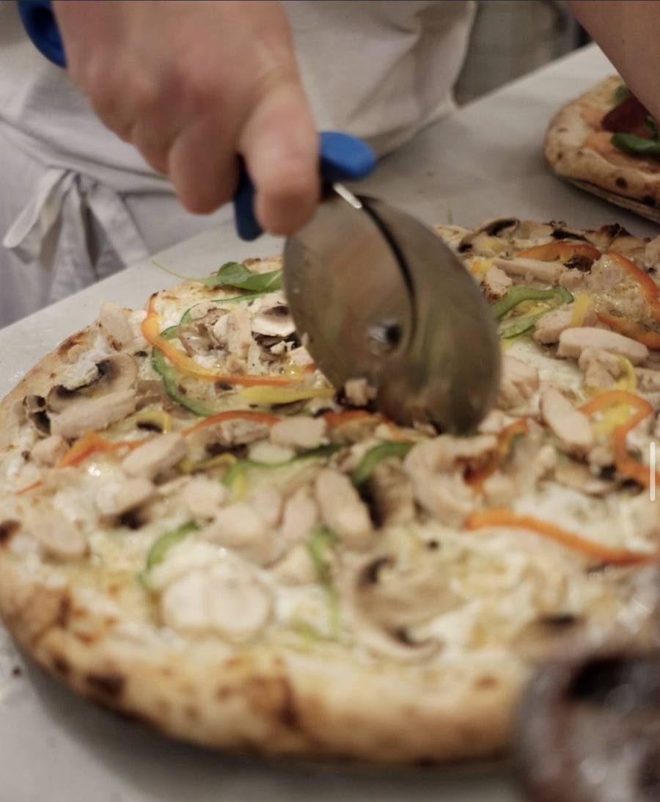
Elaboramos nuestra masa a diario y la dejamos reposar al menos 48 horas antes de que entre al horno. Sin prisa. Por eso es ligera, se digiere bien y tiene un sabor que no se consigue de otra forma.
Lista para el horno: ligera y con sabor propio.
02 — El sabor
La auténtica pizza romana.
Base fina y crujiente, borde ligero, y encima productos de primera: burrata italiana, lardo toscano, boletus, aceite de trufa, paletilla ibérica y dos quesos de nuestra tierra, Sasamón curado e Hinestrosa semicurado.
Lo que dicen en Google
No lo decimos nosotros.
15 reseñas recientes en Google · 14 de 5 estrellas y 1 de 4
“Las pizzas increíbles. No atienden en mesa pero en barra son bastante amables. 100% recomendado. La pizza marquesita 10/10…”Andrés Bayona · Noviembre 2026
“Pizzas muy buenas y buena atención. Comida: 5 | Servicio: 5 | Ambiente: 5”Adrian De Hombre · Noviembre 2026
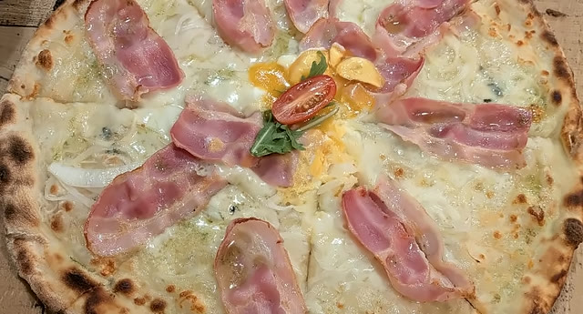
“las pizzas son algo caras (17-20€), pero merece la pena. probablemente la mejor pizzería de burgos. Comida: 5 | Servicio: 5 | Ambiente: 5…”Marina González · Noviembre 2026
“La mejor pizza que puedes comer en Burgos. La masa es fina. Tiene un sabor delicioso. Recomiendo la pizza de alcachofa.”Traducida del turco por GoogleEngin Dikmen · Noviembre 2026
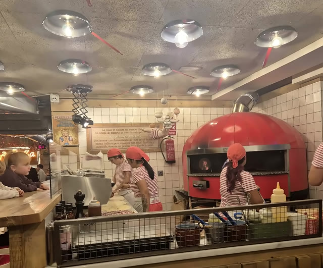
“Maravilla de experiencia… Buen ambiente, decoración y trato… Eso si las pizzas 🍕 😋 DELICIOSAS 😋 Y calidad precio 👌 😉 si volvemos a Burgos volvemos fijo”La MaletaRural NoeliaClemente · Noviembre 2026
“Triple R, pizzas rápidas, ricas y recomendables. Comida: 5 | Servicio: 5 | Ambiente: 5”Jaime Millán _ Arquitecto · Noviembre 2026
“Comida: 5 | Servicio: 5 | Ambiente: 5. Reservas: Se recomienda hacer una reserva. Tiempo de espera: Sin espera…”Juancar Teijido · Noviembre 2026
“Pedimos para llevar y todo muy bien.”Andrés Karg · Octubre 2026
“Pedimos la pizza burratina y estaba muy buena, además de que la hicieron muy rápido.”noa · Octubre 2026
“Sitio en el centro con buenas pizzas. Si vas con niños el local es pintoresco y son muy rápidos en darte tus pizzas.…”juan francisco salazar · Octubre 2026
“Todo es perfecto! Todo! Comida: 5 | Servicio: 5 | Ambiente: 5”Vita Doriani · Octubre 2026
“Pizzas hechas a mano, al momento, generosas de ingredientes y con gran sabor. Pedimos la tuna, la bacon y la picantona y todas estaban riquísimas…”Bilbo77 · Octubre 2026
“Servicio muy muy rápido y muy bueno todo !”Iphone V · Octubre 2026
“Espectacular el trato recibido. María ha sido muy amable. Un ejemplo a seguir. Feliz cumpleaños🎉…”Carlos Palermo · Octubre 2026
“Comida: 5 | Servicio: 5”Josephine CJ · Octubre 2026
03 — La carta · Tamaño 33 cm
33 pizzas. Una es la tuya.
Masa fermentada mínimo 48 horas · Pizzas artesanas en horno de leña · IVA incluido · Disponemos de información para personas con alergias y/o intolerancias.
04 — El equipo
Maestros pizzeros con pasión.
Somos maestros pizzeros que vivimos con pasión la pizza, en constante formación. Estas fotos son nuestras: el local, el horno y la gente que hace cada pizza.
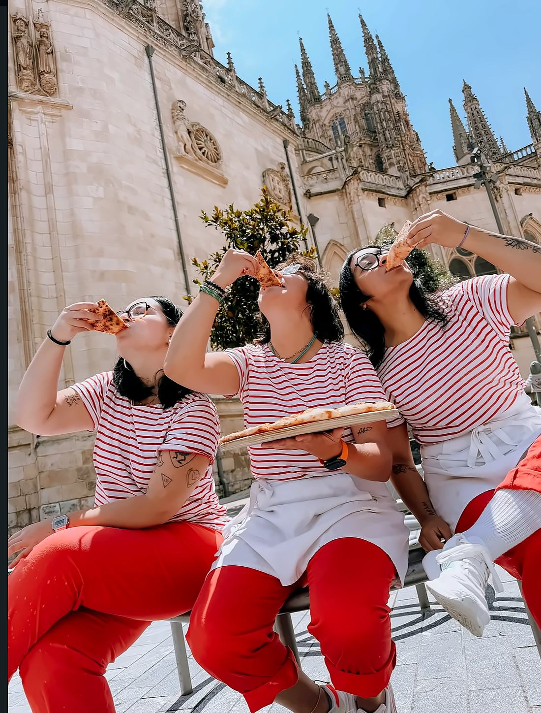
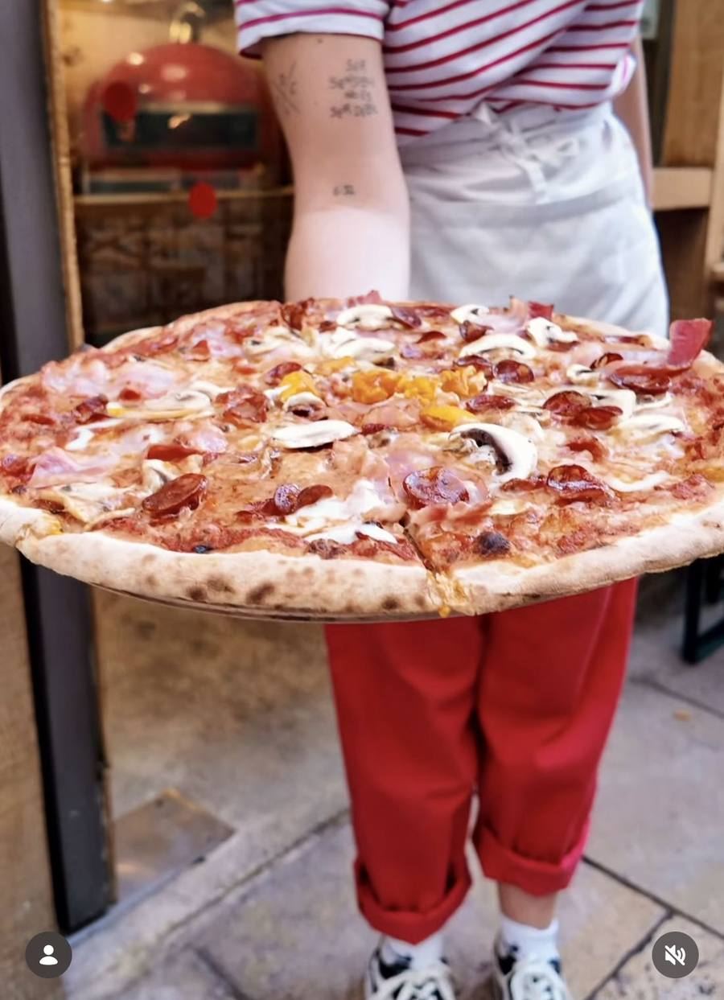
Por las rayas rojas, el horno encendido y la pizza en la mano.
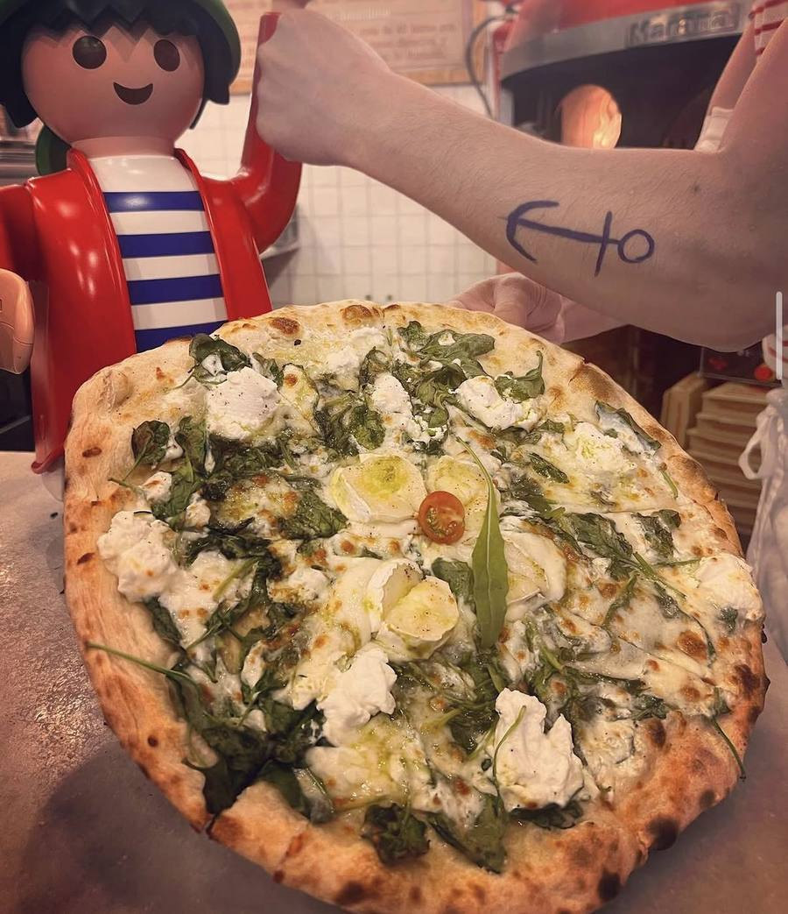
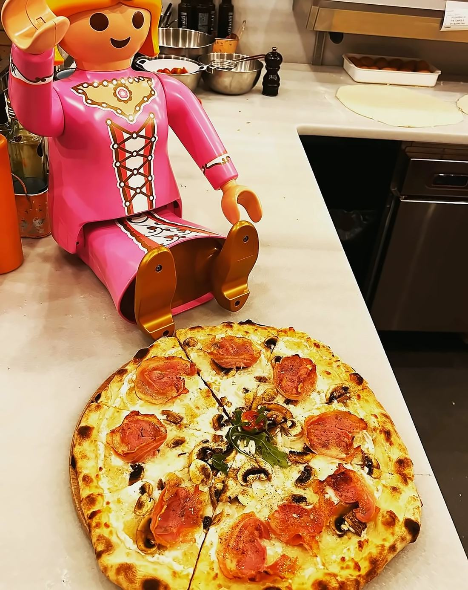
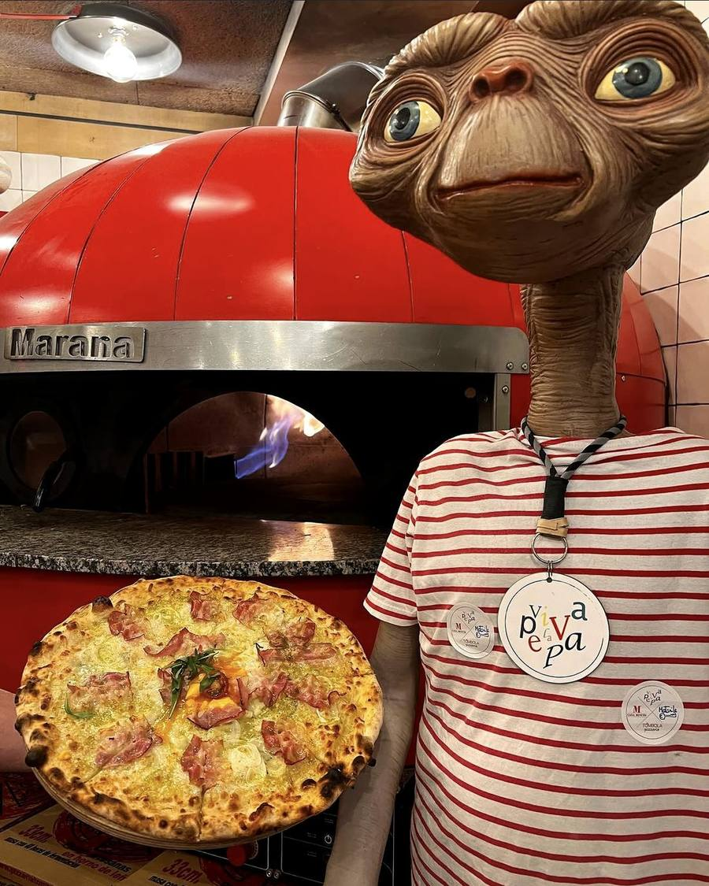
Grafiti, neón y un horno rojo que no se apaga.
E.T. siempre está en Tómbola. Junto al horno, en la mesa o en tus fotos.
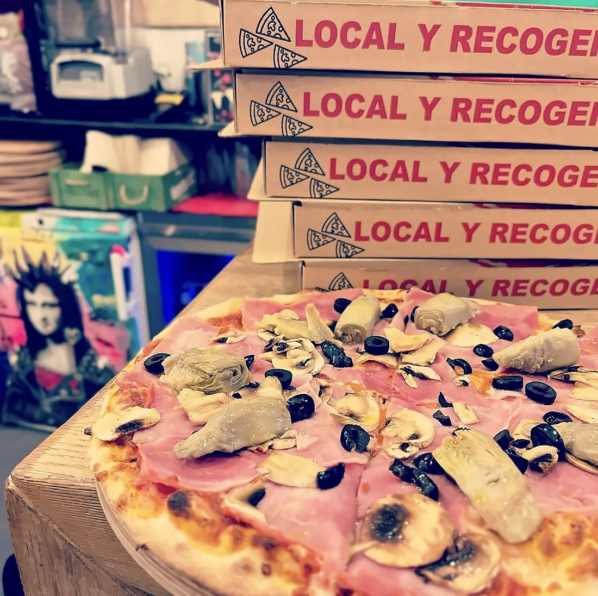
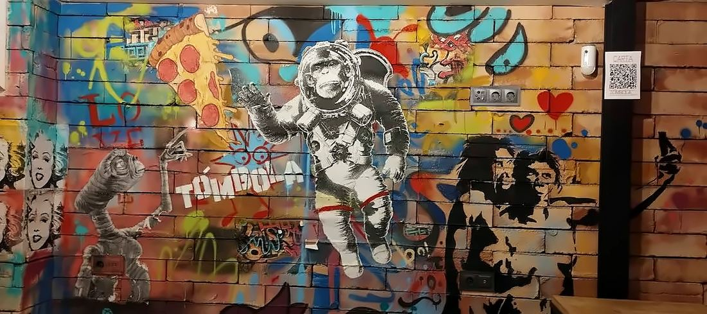
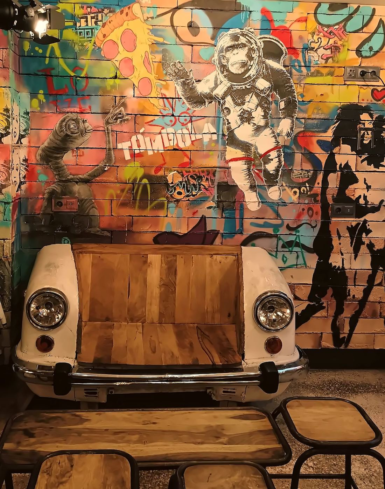
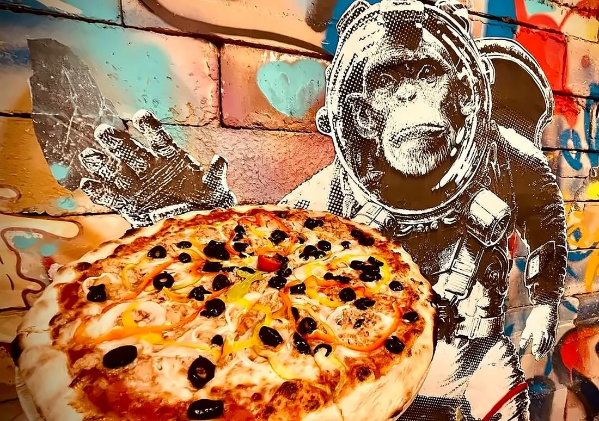
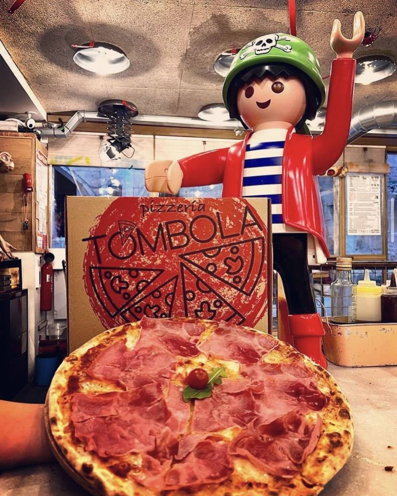
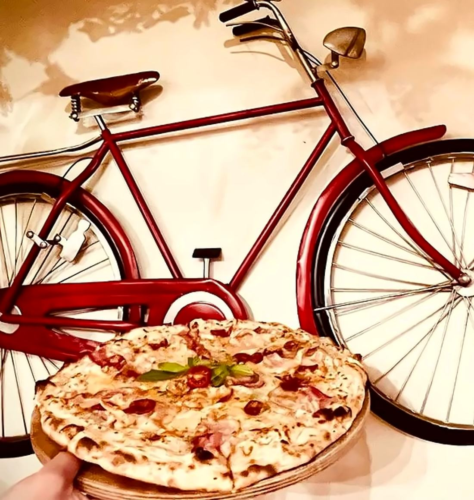
05 — Para acompañar
Vinos por copas y botellas.
Cerveza de barril Caña o pinta · Mahou
Mahou · Maestra · IPA · 0,0 Tostada
En botella
Alhambra · Coronita · Rubia 0,0 · Pájaro Amarillo
Smoothies Fruta + zumo
- Energéticofresa + plátano
- Regeneradorkiwi + piña + mango + melón
- Antioxidantepapaya + mango + piña
- Protectorfresa + mora + frambuesa
- Tonificanteplátano + mango + piña + coco
06 — En contacto
Esta noche, pizza.
C/ Diego Porcelos 7 · 09003 Burgos
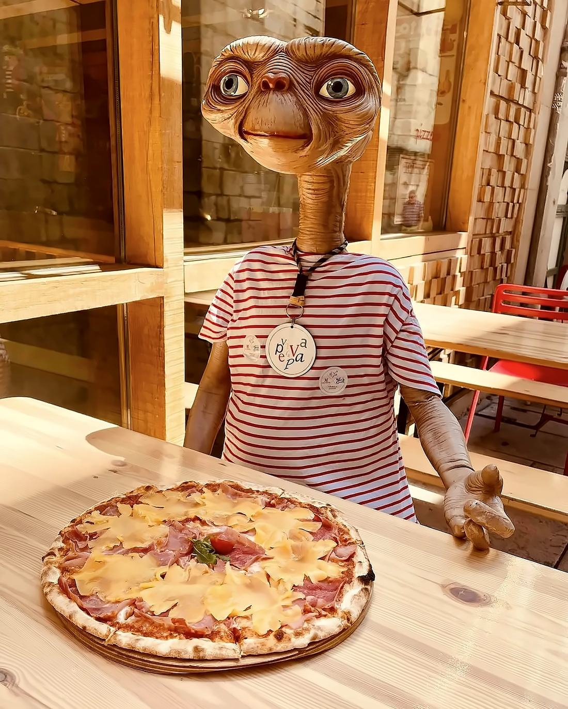
E.T. ya te está guardando sitio. Ven a verle, o llévate la pizza a casa.
Horario
- Lunes19:30 – 23:00
- Martes19:30 – 23:00
- Miércoles19:30 – 23:00
- Jueves19:30 – 23:00
- Viernes19:30 – 24:00
- Sábado13:30 – 16:00 · 19:30 – 24:00
- Domingo13:30 – 16:00 · 19:30 – 23:00